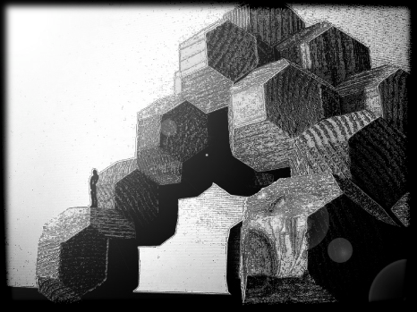

من الممكن تعبئة الفضاء الثلاثي الأبعاد بمكعبات. المثير للدهشة هو أنه بالإمكان تعبئة الفضاء (بدون فراغات) بواسطة مجسمات أخرى، بإستعمال الإنزلاق فقط. تُدعى هذه الأجسام بمتعددات المقام لتبليط الفضاء. يسمح البرنامج على اليمين بإكتشاف خمسة أنواع من متعددات المقام لتبليط الفضاء. بنيات التعبئة التي تولدها متعددات المقام هي مهمة وليس للرياضيات فحسب. فهي تشكل أيضا الأساس لمواقع الذرات في البنيات البلورية المنتظمة.
|
 |
تصميم معماري مستقبلي مع أشكال لتبليط الفضاء